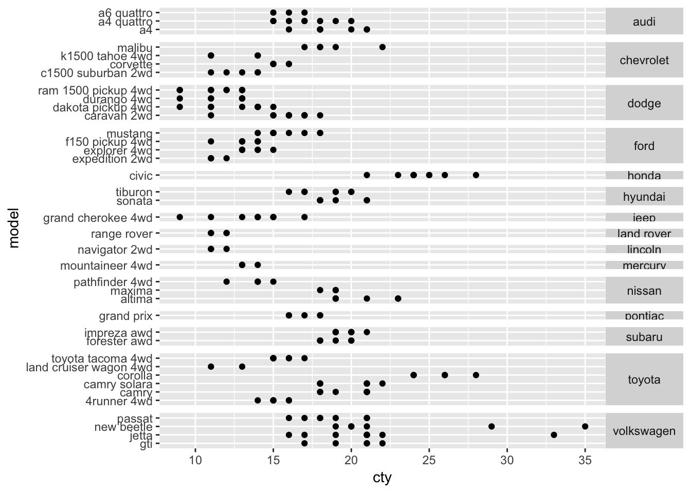
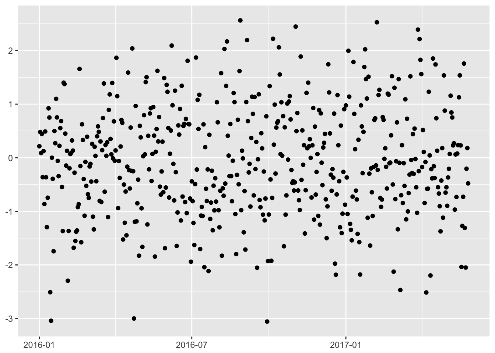
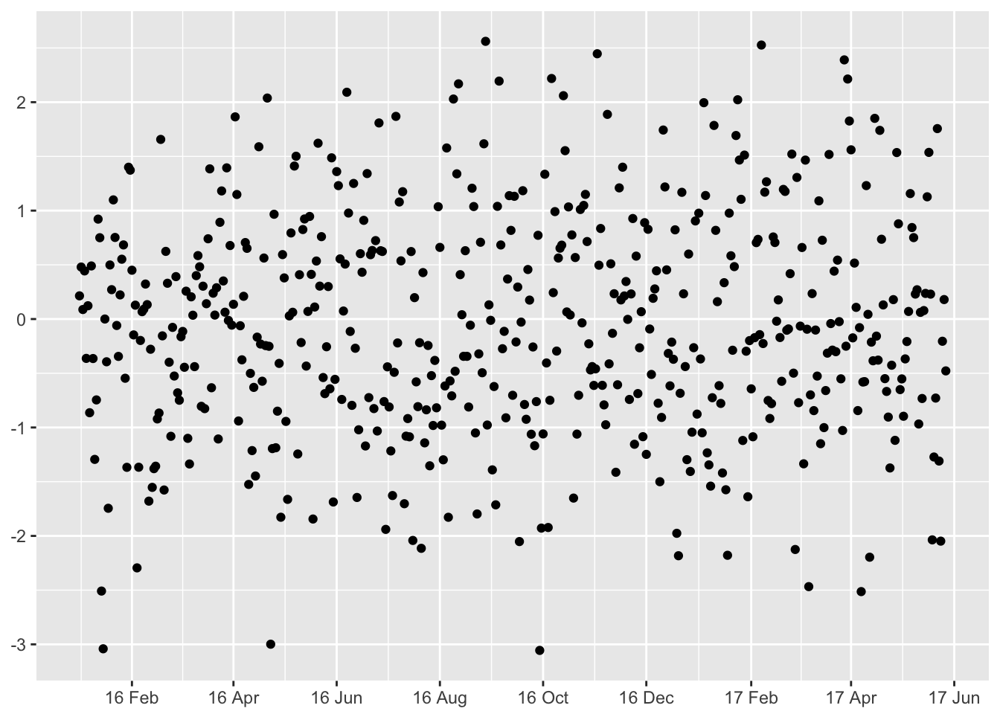
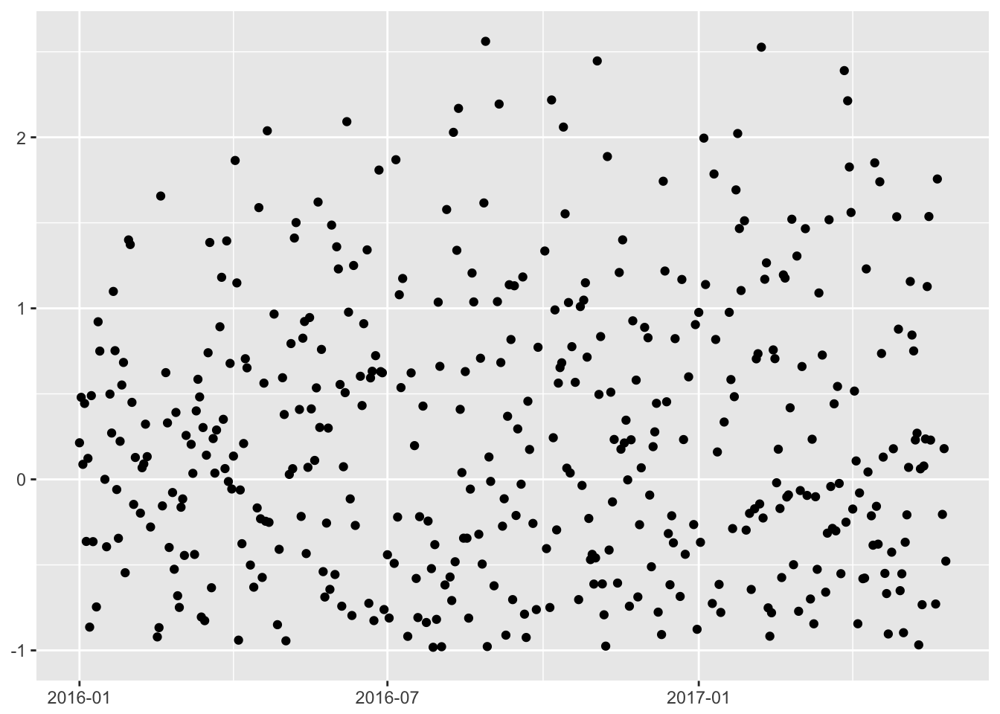
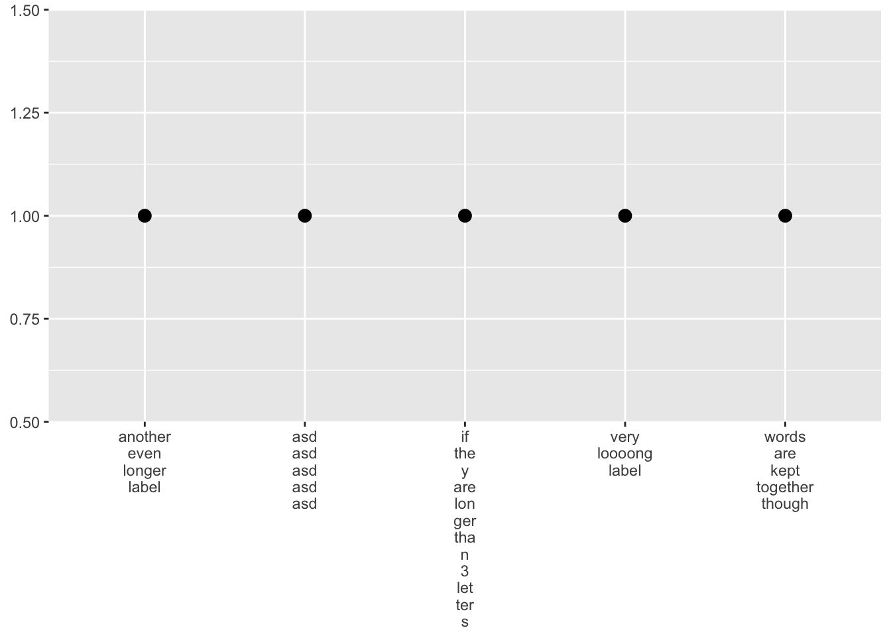

I have been using ggplot2 quite extensively for two years now but I still learn new things from reading and re-reading Hadley Wickhams’s ggplot2 book. Here are some examples.
library("ggplot2")
library("magrittr")You not only can have free scales with facetting but also free space. This is especially useful with discrete axis.
ggplot(mpg, aes(cty, model)) +
geom_point() +
facet_grid(
manufacturer ~ .,
space = "free",
scales = "free"
) +
theme(
strip.text.y = element_text(angle = 0)
)
dates <- seq(
as.Date('2016-01-01'),
Sys.Date(),
by = 'days'
)
set.seed(99)
g <- data.frame(
day = dates, y = rnorm(length(dates))
) %>%
ggplot(aes(x = day, y)) +
geom_point() +
labs(x = NULL, y = NULL)
g
We may decide the default date breaks are too sparse for us.
g + scale_x_date(
date_labels = "%y %b",
date_breaks = "2 months"
)
We can specify only one limit:
g + ylim(c(-1, NA))
You can have long axis labels printed on multiple lines.
data.frame(
x = c(
'very loooong label',
'another even longer label',
'asd asd asd asd asd',
'words are kept together though',
'if the y are lon ger tha n 3 let ter s'
),
y = 1
) %>%
ggplot(aes(x, y)) +
geom_point(size = 3) +
scale_x_discrete(
labels = scales::wrap_format(3)
) +
labs(x = NULL, y = NULL)